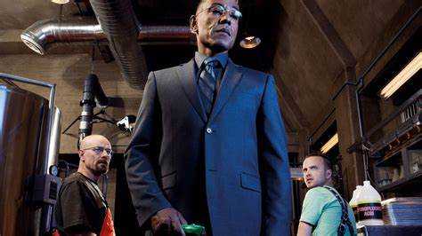

Walter "Walt" Hartwell White, también conocido por su seudónimo clandestino "Heisenberg".
Es un químico y profesor de química de Albuquerque, Nuevo México que,
tras ser diagnosticado con cáncer de pulmón inoperable, decide empezar a fabricar
metanfetamina para poder mantener a su familia provista de cara al futuro.
Walt era un químico prometedor que contribuyó en el auge de la compañía multimillonaria
Gray Matter Technologies, pero salió de la empresa de forma abrupta vendiendo su parte
de la misma por cinco mil dólares. Los fundadores Elliott y Gretchen Schwartz se casan y
hacen una fortuna, mientras que Walt les acusa de apoderarse de sus contribuciones para
tener éxito sin darle ningún crédito.
Jesse Bruce Pinkman es el compañero de Walter White en el tráfico de metanfetamina.
En el instituto, Jesse era un consumidor, fabricante y traficante de poca monta de metanfetamina.
Era un estudiante que prestaba poca atención a las clases de química de su profesor, el propio Walter.
Años después, Jesse se dedica al tráfico de droga con el seudónimo "Cap'n Cook" y
añade polvo de chili a su producto para caracterizarlo.
Gustavo "Gus" Fring era el líder criminal de un imperio de drogas y el dueño de la cadena de
restaurantes Los Pollos Hermanos.Un magnate de negocios y filántropo nacido en Chile
Inicialmente estaba afiliado al Cártel de Juárez, que utilizaba en
secreto sus restaurantes como una tapadera legítima para la distribución de
metanfetamina en todo el suroeste de Estados Unidos.
Al igual que Walter White, Gus era un criminal que se escondía "en plena vista,"
recurriendo a su posición social como filántropo para ocultar su
verdadera naturaleza según construía su imperio.
James "Jimmy" Morgan McGill, conocido posteriormente como Saul Goodman,
es un abogado criminal de Albuquerque conocido en la ciudad por sus peculiares
anuncios televisivos que se emiten a altas horas de la noche, en el que menciona su lema,
"Better Call Saul!" ("¡Mejor llama a Saul!").
Skyler White (de soltera Lambert) es la mujer de Walter White y madre de Walter White Jr. y Holly White.
Skyler ha tenido múltiples trabajos o actividades para obtener dinero: escribiendo historias cortas, vendiendo objetos en eBay,
trabajando como contable en Beneke Fabricators y ayudando a Walt con el local de lavado.
Skyler quiere mucho a Walter, pero su matrimonio pasa a tener problemas debido a sus ausencias y su comportamiento extraño,
lo cual acaba llevando a su separación.
Henry R. "Hank" Schrader es el marido de Marie Schrader (hermana de Skyler White)
y agente especial a cargo de las oficinas de la DEA en Albuquerque
Un hombre enérgico y bullicioso, Hank es además cuñado de Walter White.
Marie Schrader (de soltera Lambert) es la hermana de Skyler White y mujer del agente de la DEA Hank Schrader.
Marie es muy cercana a su hermana, a pesar de que suele irritar a
Skyler el hecho de que esté siempre curoseando sobre todo.
Trabaja como técnica en Kleinman Radiology Center, una oficina de escáneres
médicos y de rayos X. Ella y Hank no tienen hijos.
Walter Hartwell White Jr., también conocido por el apodo "Flynn"
es el hijo de Walter y Skyler White y el hermano de Holly White.
Estudia en el mismo instituto en el que su padre imparte clases.
Walter Jr. ha nacido con parálisis cerebral, lo cual puede notarse
tanto en la dificultad al hablar como en los problemas al moverse,
para lo cual utiliza muletas.